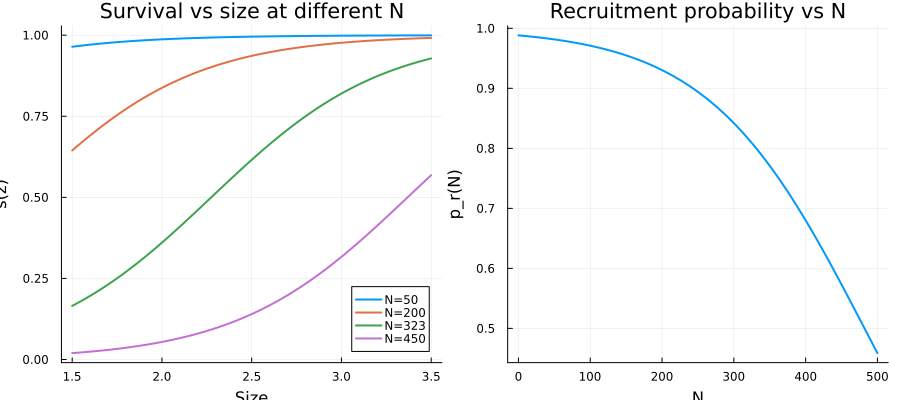
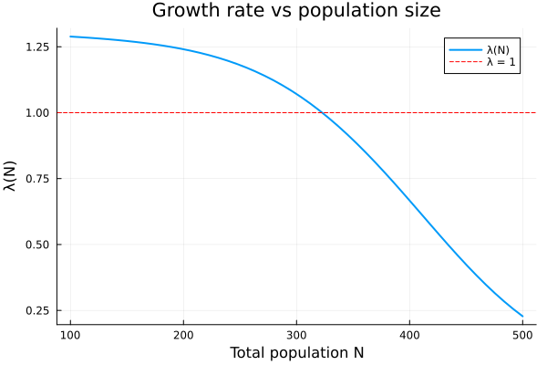
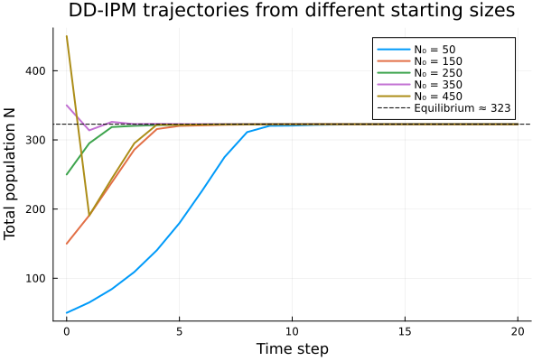
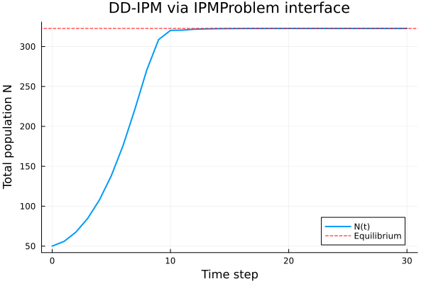
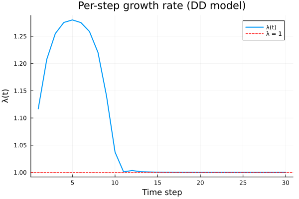
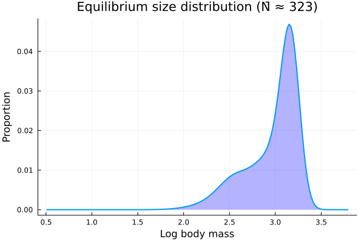

Density-Dependent IPMs
Overview
In density-dependent (DD) IPMs, vital rates depend on the current population size $N_t = \int n(z, t) \, dz$. The kernel $K(z', z; N_t)$ is rebuilt at each time step, so the population dynamics are nonlinear.
This vignette models Soay sheep with density-dependent survival, recruitment probability, and recruit size, following Ellner, Childs & Rees (Chapter 5). The key goal is to find the equilibrium population size $\bar{N}$ where $\lambda(N) = 1$.
Setup
using IntegralProjectionModels
using Distributions
using LinearAlgebra
using PlotsParameters
Density-dependent parameters have an additional Nt term that reduces the vital rate as population size increases.
# Survival (density dependent: surv.Nt < 0)
surv_int = 1.06
surv_z = 2.09
surv_Nt = -0.018
# Growth (NOT density dependent)
grow_int = 1.41
grow_z = 0.557
grow_sd = 0.0799
# Reproduction probability (NOT density dependent)
repr_int = -7.23
repr_z = 2.60
# Recruitment probability (density dependent)
recr_int = 4.43
recr_Nt = -0.00919
# Recruit size (density dependent)
rcsz_int = 0.540
rcsz_z = 0.710
rcsz_Nt = -0.000642
rcsz_sd = 0.1590.159Domain
L = 0.5
U = 3.8
m = 165
domain = ContinuousDomain(L, U, m)
z = meshpoints(domain)
h = step_size(domain)0.02Density-Dependent Vital Rates
# Survival depends on total population N
s_z(z, Nt) = 1.0 / (1.0 + exp(-(surv_int + surv_z * z + surv_Nt * Nt)))
# Growth (density independent)
g_z1z(z_prime, z) = pdf(Normal(grow_int + grow_z * z, grow_sd), z_prime)
# Reproduction probability (density independent)
pb_z(z) = 1.0 / (1.0 + exp(-(repr_int + repr_z * z)))
# Recruitment probability depends on N
pr_z(Nt) = 1.0 / (1.0 + exp(-(recr_int + recr_Nt * Nt)))
# Recruit size depends on maternal size and N
c_z1z(z_prime, z, Nt) = pdf(Normal(rcsz_int + rcsz_z * z + rcsz_Nt * Nt, rcsz_sd), z_prime)c_z1z (generic function with 1 method)Visualize DD Effects
N_vals = [50, 200, 323, 450]
z_plot = range(1.5, 3.5, length=100)
p1 = plot(title="Survival vs size at different N", xlabel="Size", ylabel="s(z)")
p2 = plot(title="Recruitment probability vs N", xlabel="N", ylabel="p_r(N)")
for N in N_vals
plot!(p1, z_plot, [s_z(zi, N) for zi in z_plot], label="N=$N", linewidth=2)
end
N_range = range(0, 500, length=100)
plot!(p2, N_range, [pr_z(N) for N in N_range], label=false, linewidth=2)
plot(p1, p2, layout=(1, 2), size=(900, 400))
Building the DD Kernel
For a DD model, the kernel is a function of the current population state. We pass this function to IPMProblem with the DensityDependent() tag.
function dd_kernel(n_t, t, p)
Nt = sum(n_t) * h # total population (integrate over domain)
# Survival-growth kernel
function P_z1z(z_prime, z)
return s_z(z, Nt) * g_z1z(z_prime, z)
end
# Fecundity kernel
function F_z1z(z_prime, z)
return 0.5 * s_z(z, Nt) * pb_z(z) * pr_z(Nt) * c_z1z(z_prime, z, Nt)
end
P = PKernel(CustomVitalRate(z -> s_z(z, Nt)), CustomVitalRate(g_z1z), domain)
F = FKernel(CustomVitalRate(F_z1z), domain)
return P + F
enddd_kernel (generic function with 1 method)Lambda as a Function of Population Size
At the equilibrium population size $\bar{N}$, the asymptotic growth rate $\lambda(\bar{N}) = 1$. We can compute $\lambda(N)$ for a range of $N$ values.
function lambda_at_N(N)
# Build kernel at density N
# Create a population vector scaled to total N
n_dummy = fill(N / (m * h), m) # uniform distribution with total = N/h
kern = dd_kernel(n_dummy, 1, nothing)
K = materialize(kern)
e = eigen(K)
return real(e.values[argmax(real.(e.values))])
end
N_test = range(100, 500, length=50)
λ_test = lambda_at_N.(N_test)
plot(N_test, λ_test,
xlabel="Total population N",
ylabel="λ(N)",
title="Growth rate vs population size",
label="λ(N)",
linewidth=2)
hline!([1.0], label="λ = 1", linestyle=:dash, color=:red)
Finding the Equilibrium
The equilibrium $\bar{N}$ is the population size where $\lambda(N) = 1$. We find it using bisection.
function find_equilibrium(f, lo, hi; tol=1e-6, maxiter=100)
for i in 1:maxiter
mid = (lo + hi) / 2
val = f(mid) - 1.0
if abs(val) < tol
return mid
elseif val > 0
lo = mid
else
hi = mid
end
end
return (lo + hi) / 2
end
N_eq = find_equilibrium(lambda_at_N, 200.0, 400.0)
λ_eq = lambda_at_N(N_eq)0.9999992753095688println("Equilibrium population: N̄ = ", round(N_eq, digits=1), " females")
println("λ at equilibrium: ", round(λ_eq, digits=6))Equilibrium population: N̄ = 322.7 females
λ at equilibrium: 0.999999The equilibrium is approximately 323 females, matching the R result from uniroot.
Population Trajectories
We can iterate the DD-IPM from different starting population sizes to see convergence to the equilibrium.
function iterate_dd(N0, n_steps)
# Start with stable distribution at density N0
n_dummy = fill(N0 / (m * h), m)
kern = dd_kernel(n_dummy, 1, nothing)
K = materialize(kern)
e = eigen(K)
w = real.(e.vectors[:, argmax(real.(e.values))])
w = abs.(w)
# Scale to desired total population
n_t = w .* (N0 / (h * sum(w)))
Nt_series = Float64[sum(n_t) * h]
for t in 1:n_steps
kern = dd_kernel(n_t, t, nothing)
K_t = materialize(kern)
n_t = K_t * n_t
push!(Nt_series, sum(n_t) * h)
end
return Nt_series
end
N0_vals = [50, 150, 250, 350, 450]
n_steps = 20
plt = plot(xlabel="Time step", ylabel="Total population N",
title="DD-IPM trajectories from different starting sizes")
for N0 in N0_vals
Nt = iterate_dd(N0, n_steps)
plot!(plt, 0:n_steps, Nt, label="N₀ = $N0", linewidth=2)
end
hline!(plt, [N_eq], label="Equilibrium ≈ $(round(Int, N_eq))", linestyle=:dash, color=:black)
plt
All trajectories converge to the same equilibrium, regardless of starting population size.
Using IPMProblem with DensityDependent()
We can also use the IPMProblem interface with the DensityDependent() tag.
n0_dd = fill(50.0 / (m * h), m) # Start at N = 50
prob_dd = IPMProblem(DensityDependent(), dd_kernel, domain, n0_dd, (0, 30))
sol_dd = solve(prob_dd)
# Population trajectory
total_pop = [sum(u) * h for u in sol_dd.u]
plot(0:30, total_pop,
xlabel="Time step", ylabel="Total population N",
title="DD-IPM via IPMProblem interface",
label="N(t)", linewidth=2)
hline!([N_eq], label="Equilibrium", linestyle=:dash, color=:red)
# Per-step growth rates
plot(sol_dd.lambdas,
xlabel="Time step", ylabel="λ(t)",
title="Per-step growth rate (DD model)",
label="λ(t)", linewidth=2)
hline!([1.0], label="λ = 1", linestyle=:dash, color=:red)
Equilibrium Size Distribution
# Iterate to convergence from equilibrium N
let n_eq = fill(N_eq / (m * h), m)
for _ in 1:50
kern = dd_kernel(n_eq, 1, nothing)
K_eq = materialize(kern)
n_eq = K_eq * n_eq
end
# Normalize
n_eq_norm = n_eq ./ sum(n_eq)
plot(z, n_eq_norm,
xlabel="Log body mass", ylabel="Proportion",
title="Equilibrium size distribution (N̄ ≈ $(round(Int, N_eq)))",
label=false, linewidth=2, fill=(0, 0.3, :blue))
end
Summary
In this vignette we:
- Built a density-dependent IPM where survival, recruitment, and recruit size decrease with population size
- Computed $\lambda(N)$ across a range of population sizes
- Found the equilibrium population $\bar{N} \approx 323$ females where $\lambda = 1$
- Demonstrated convergence from multiple starting conditions
- Used both manual iteration and the
IPMProblem(DensityDependent(), ...)interface